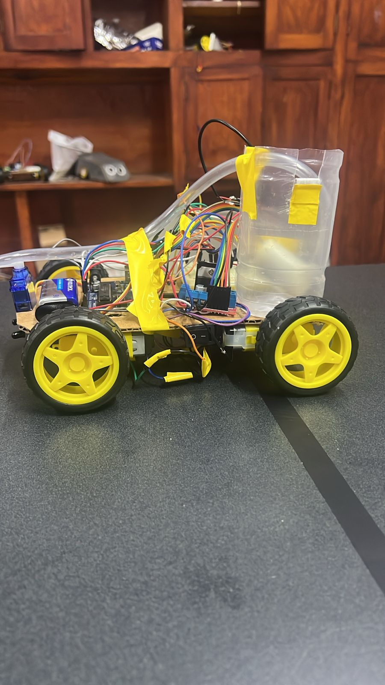
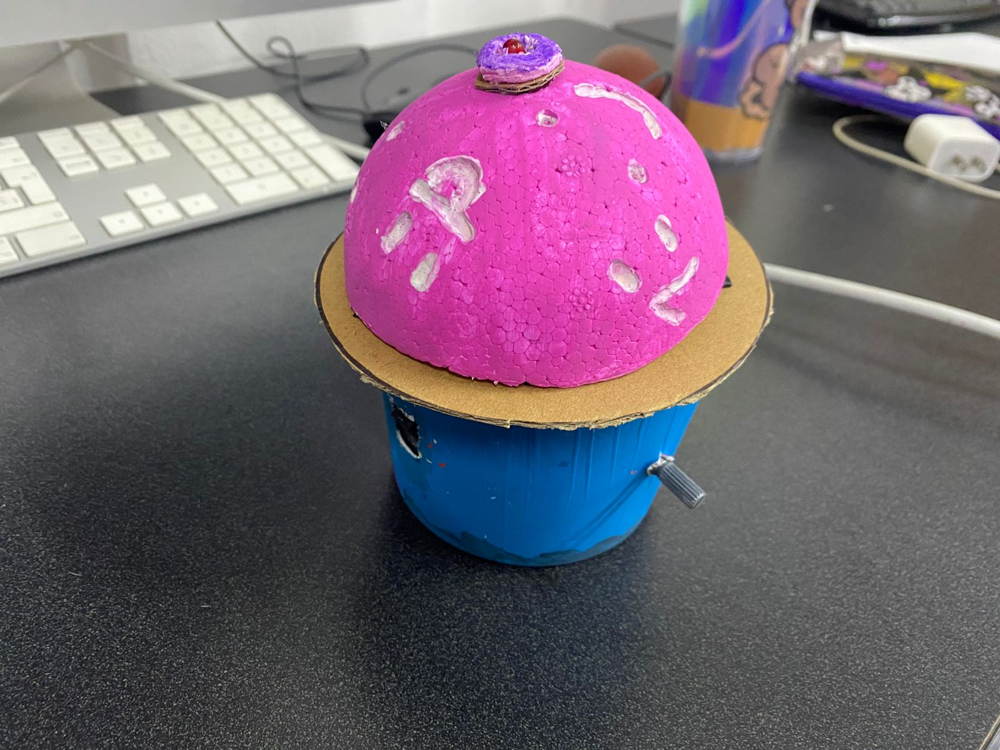
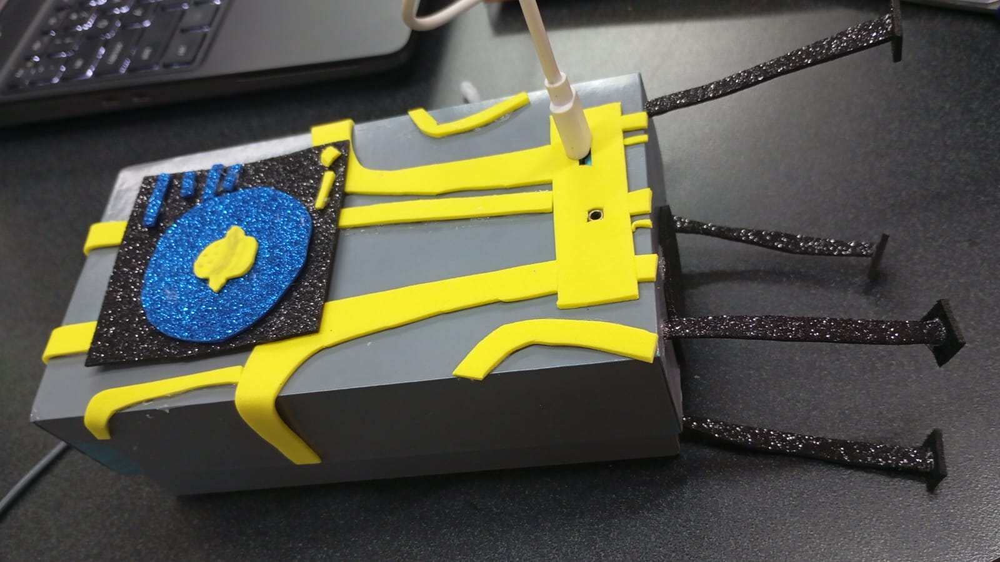

Carro Seguidor de Línea
Carrito seguidor de línea.

Carrito Seguidor de Luz
Carrito seguidor de luz, decorado.
Semaforo
Semaforo controlado por arduino.
Radar
Prueba de radar con arduino.
Carrito Seguidor de Luz
Carrito ajolote seguidor de luz.
Intervención Infrarroja
Intervención Infrarroja.
Leds Musicales
Leds que perciben el sonido de la música y reaccionan a ella con arduino.
Garra
Garra controlada con servos y arduino.
Foco Sonido
Foco prende y apaga al reaccionar al sonido, con arduino.

Bombera
Bombera que identifica el calor y echa agua a la zona, con arduino.
Realizado con un termosensor, al detectar fuego el arduino manda la señal a los motores para acercarse a la fuente de calor manteniéndose en el rango de disparo, después activa la bomba que pasa por el aspersor creando un chorro de agua que es lanzado de forma horizontal con ayuda de un servo.

Detector de Luz
Detector de Luz.
Se usaron dos fotorresistencias que al detectar luz dan la señal a los PNP, estos se encargan de dejar pasar la corriente para activar los leds verdes.

Máquina de Toques
Máquina de toques, se le modifica el voltaje para la cantidad de fuerza del toque hacia el o los individuos.
Esta máquina de toques utiliza un transformador para hacer que 9 voltios se transformen en 160 voltios, se usó un tip para ayudar al multímetro a manejar la intensidad de la corriente.

Piano
Notas a escala, cada botón está modificado para que suene.
Este piano funciona a base de distintas resistencias los cuales dejan pasar la corriente más o menos para dar su respectiva nota a cada pulsador. Se usó un microcontrolador n555 para manejar mejor la corriente entre pulsadores, almacenando una pequeña cantidad en el capacitor para dar una mayor duración a la nota.

Torreta
Torreta.
Esta torreta funciona gracias a dos circuitos integrados n555, los cuales van intercalando la corriente haciendo parpadear la torreta con ayuda de los capacitores para almacenar carga. Se usaron 4 led rojos y 4 leds azules para simular una torreta de policía.

Consola
Consola de videojuegos.
Una consola armada con una tableta ESP32, un circuito integrado y un control reutilizado de ness, capaz de correr juegos de 8 bit.